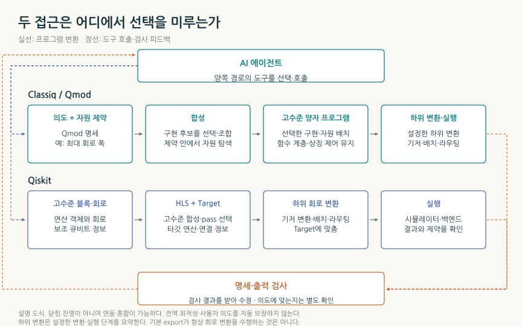
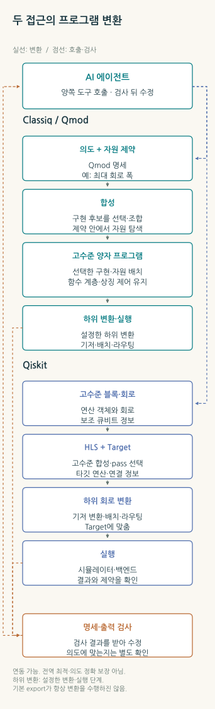
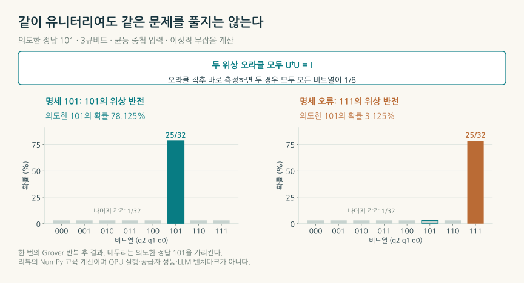
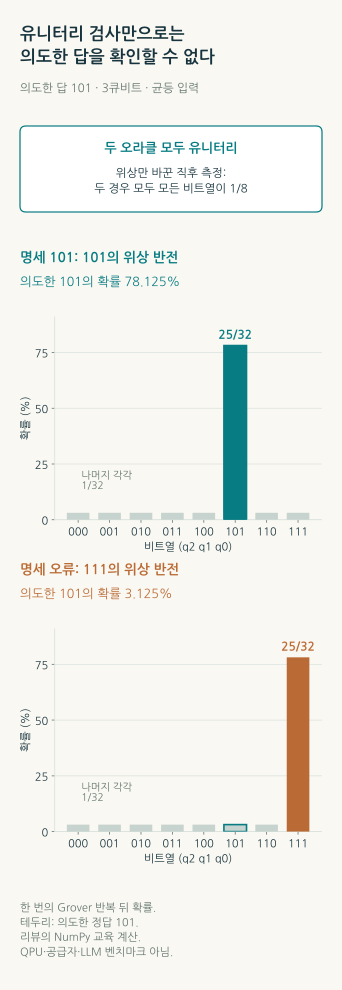
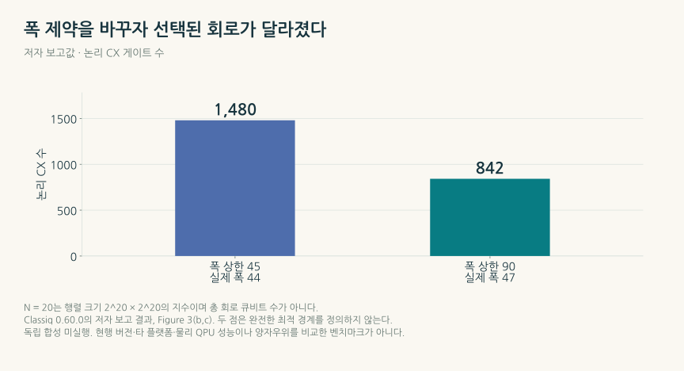
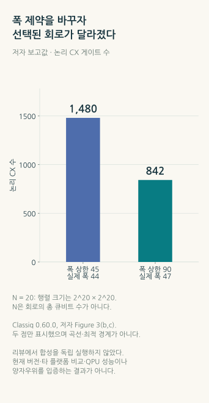

양자 소프트웨어의 두 경쟁 경로: 회로 합성, AI 에이전트와 생태계의 주도권
Classiq의 고수준 모델링과 Qiskit·CUDA-Q의 도구 생태계는 무엇을 다르게 자동화하는가—명세의 정확성, 큐비트와 연산의 교환, 하드웨어 연동과 채택 장벽에서 읽는 조건부 전망
TECH REVIEW · 2026년 10월 25일 · 양자 프로그래밍·컴파일러·AI 에이전트

내용 살펴보기
1. 기계가 정확하게 풀어 준, 잘못된 질문
여덟 개의 후보에서 정답 하나를 찾는 양자 프로그램을 만든다고 생각해 보자. 정답의 이름은 세 비트로 쓴 101이다. AI에게 프로그램 작성을 맡겼는데, 만들어진 회로는 111을 정답으로 표시한다. 문법은 맞고, 양자역학이 허용하는 연산이며, 계산도 정상적으로 끝난다. 좋은 기계일수록 엉뚱한 후보를 더 충실하게 찾아줄 수 있다.
이 작은 장면은 양자 소프트웨어 경쟁을 들여다보는 창이다. 자연어 요청을 코드로 바꾸는 능력, 수학적 모델을 회로로 구현하는 능력, 그 회로를 특정 장치에 맞추는 능력, 결과가 원래 질문에 답하는지 확인하는 능력은 이어져 있지만 서로 다른 일을 한다. 사용자에게는 “계산해 달라”는 한 문장이지만 그 사이에는 여러 책임이 있다.
Classiq는 함수·양자 변수·자원 조건을 담은 고수준 모델을 만들고 구현의 선택을 합성기에 맡기는 접근을 발전시켰다. Qiskit과 CUDA-Q를 중심으로 한 도구 생태계에서는 지원하는 알고리즘 블록과 합성·컴파일·실행 기능을 조합한다. AI 에이전트는 양쪽 모두의 앞에 놓일 수 있다. 따라서 경쟁은 새 언어와 게이트 코딩, 독점과 오픈소스라는 한 줄의 대립으로 설명되지 않는다. [2–5,12]
주도권을 가를 질문은 어떤 인터페이스가 더 그럴듯한 코드를 쓰느냐보다, 같은 목적을 검증 가능한 결과로 바꾸는 총비용을 누가 지속적으로 줄이느냐다. 고수준 합성은 구현 선택의 부담을 줄이고, 도구 생태계는 조합·수정·배포의 장벽을 낮춘다. 두 경로가 겹치는 곳에서는 상호운용이 늘고, 차이가 남는 곳에서는 비교 실험이 필요하다. 이 글은 그 차이와 조건부 전망을 2026년 10월 25일까지 확인한 논문·문서·공개 코드로 살핀다.
2. “무엇을 계산할까”를 얼마나 오래 남겨 두는가
일반 프로그램에서 두 수를 더하는 표현은 짧다. 양자 프로그램에서는 그 수를 몇 큐비트로 나타낼지, 부호와 소수 자릿수는 무엇인지, 결과를 새 공간에 쓸지, 중간 계산에 쓴 공간은 어떻게 돌려놓을지가 함께 따라온다. 이 결정은 회로의 크기와 연산 수를 바꾼다.
Classiq의 고수준 양자 모델링 언어 Qmod는 이런 양자 변수와 함수 관계를 모델에 남긴다. Python의 문법을 빌려 작성하는 방식도 있으므로 사용자가 반드시 별도의 텍스트 언어부터 배워야 하는 것은 아니다. 다만 Python 표현을 썼다는 사실과 일반 Python 계산이 양자 상태 위에서 그대로 실행된다는 말은 다르다. 양자 숫자에는 유한한 비트 수와 표현 범위가 있고, 덧셈의 출력 폭이나 넘침의 처리는 프로그램의 의미에 참여한다. [2,3]
함수를 사용한 뒤 임시 공간을 원래 상태로 돌려놓는 역계산(uncomputation)도 중요한 예다. 종이에 적은 중간값을 지우는 것과 달리, 양자 계산에서는 입력과 임시 레지스터 사이에 남은 상관관계를 고려해야 한다. Qmod는 특정 타입·의존성 규칙과 역연산 구조를 이용해 이 작업을 자동화한다. 이런 규칙이 구현 부담을 줄이는 것은 실제 기술적 가치다. 그 보장을 문제 정의 전체의 타당성이나 모든 장치에서의 성공으로 넓혀 읽으면 범위가 달라진다. [3]
Qiskit도 고수준 정보를 받는다. HighLevelSynthesis는 지원하는 추상 연산과 주석이 붙은 연산을 합성 방법으로 내리고, 사용 가능한 보조 큐비트를 합성기에 전달한다. 예를 들어 여러 제어 비트가 모두 1일 때 목표 비트를 뒤집는 MCX 연산은 하나의 고수준 객체로 둘 수 있다. 어느 분해를 쓸지는 보조 공간과 평가 기준에 따라 달라진다. 변환을 전부 끝낸 회로에서 중복 게이트만 지우는 도구로 Qiskit을 설명하는 것은 현행 구현과 맞지 않는다. [4]
그렇다고 두 시스템의 자동화 범위가 같아지는 것도 아니다. 비교할 것은 어떤 의미를 입력에 남길 수 있는지, 지원하는 연산에서 어떤 선택을 자동화하는지, 전체 프로그램의 자원 배치와 도구 사이 연결을 사용자가 얼마나 관리해야 하는지다. Qmod의 함수 모델과 서비스 합성, Qiskit의 확장 가능한 객체·플러그인·패스 구성은 겹치면서도 다른 설계 선택을 제공한다.


그림에서 중요한 것은 상자를 몇 개 거치는지가 아니라, 구현을 결정하는 순간까지 어떤 정보가 살아 있느냐다. 덧셈이라는 함수와 사용 가능한 공간을 알고 있으면 서로 다른 덧셈기를 고를 수 있다. 이미 정해진 저수준 연산열만 받는다면 상위 의도를 되살리는 데 추가 작업이 필요할 수 있다. 실제 도구는 여러 수준을 함께 사용하므로 합성(synthesis)과 트랜스파일(transpilation)을 회사 이름에 하나씩 배정해서는 안 된다.
3. 컴파일 검사가 답할 수 있는 질문
도입의 여덟 후보 예제를 조금 더 들여다보자. 세 큐비트의 계산 기저는 000부터 111까지다. 모든 후보의 진폭을 같게 준비한 뒤, 특정 후보에만 마이너스 부호를 붙이는 위상 오라클을 적용한다. 오라클은 알고리즘이 찾을 조건을 양자 연산으로 구현한 부분이다. [1]
여기서  는 후보의 세 비트, 는 조건을 만족하면 1, 아니면 0인 함수다. 위상 오라클은 조건에 맞는 후보의 진폭 부호를 바꾼다. 확률은 진폭 크기의 제곱이므로 이 직후에 비트만 측정하면 여전히 여덟 후보가 각각 1/8이다. 부호를 제대로 바꿨는지는 그 측정 분포만으로 구별되지 않는다.
는 후보의 세 비트, 는 조건을 만족하면 1, 아니면 0인 함수다. 위상 오라클은 조건에 맞는 후보의 진폭 부호를 바꾼다. 확률은 진폭 크기의 제곱이므로 이 직후에 비트만 측정하면 여전히 여덟 후보가 각각 1/8이다. 부호를 제대로 바꿨는지는 그 측정 분포만으로 구별되지 않는다.
리뷰에서는 이를 NumPy의 8차원 상태벡터로 정확 계산했다. 올바른 오라클은 101, 일부러 잘못 만든 오라클은 111을 표시한다. 둘 다 유니터리, 즉 상태의 정규화를 보존하는 연산이다. 위상 오라클에 이어 평균 진폭에 대한 반사인 확산 연산을 한 번 적용하면, 각 오라클이 표시한 후보의 확률은 25/32, 나머지 후보는 각각 1/32가 된다. 우리가 원한 101을 얻을 확률은 올바른 명세에서 78.125%, 잘못된 명세에서 3.125%다. [1,18]


위상 오라클과 확산을 합한 것이 여기서 한 번의 Grover 반복이다. 그림의 두 출력에서 모두 큰 막대가 나온다. 큰 막대가 있다는 사실만으로 원래 문제를 잘 풀었다고 판단할 수 없는 이유다. 합성기가 입력 모델을 충실히 구현했더라도 입력의 가 다른 문제를 뜻하면 결과는 달라진다. 반대로 유효한 모델을 잘못 구현한 회로라면 컴파일·동등성 검사에서 다뤄야 할 오류다. 문제의 의미, 구현의 보존, 물리 실행의 정확도를 각각 확인해야 한다.
Classiq의 자동 정리 규칙도 전체 알고리즘의 무조건적인 증명은 아니다. 공식 문서에는 검사하지 않는 선언과 해제 조건의 경계가 있고, 자체 Quantum Engineering Interface도 AI 결과의 정확성을 보장하지 않는다고 명시한다. Qiskit의 Target 역시 지원 연산·연결·시간·오류 속성 등을 표현하는 장치 모델이지 사용자의 연구 질문을 판정하는 도구는 아니다. 이 구분은 어느 한쪽의 결함을 지적하기보다 두 접근을 공정하게 비교할 출발점을 정한다. [3,5,8]
4. 합성기가 만드는 차이: 공간을 빌려 연산을 줄인다
합성의 강점은 이미 정한 회로를 빠르게 적는 데서 끝나지 않는다. 같은 연산을 구현하는 여러 방식 중 자원 조건에 맞는 것을 고르는 데 있다. 보조 큐비트를 적게 쓰면 중간값을 자주 계산하고 지워야 할 수 있고, 더 많은 공간을 허용하면 다른 연산 구성이 가능해진다. 무엇을 아끼려는지에 따라 좋은 구현의 의미도 달라진다.
핵심 지표인 CX는 제어 X(CNOT) 연산으로, 제어 비트가 1일 때 목표 비트를 뒤집는다. Goldfriend 등의 합성 프리프린트는 구현 선택의 차이를 행렬의 블록 인코딩 사례로 보여 준다. 블록 인코딩은 필요한 행렬을 더 큰 유니터리 연산의 한 부분에 담는 방법이다. Figure 3의  은 행렬 크기가
은 행렬 크기가  이라는 뜻이며 총 회로 큐비트 수가 아니다. 저자들은 CX 수를 줄이는 목적 아래, 폭 상한 45에서 실제 44큐비트·CX 1,480개, 상한 90에서 실제 47큐비트·CX 842개를 보고했다. 선택된 덧셈기 구현도 달라졌다. [6]
이라는 뜻이며 총 회로 큐비트 수가 아니다. 저자들은 CX 수를 줄이는 목적 아래, 폭 상한 45에서 실제 44큐비트·CX 1,480개, 상한 90에서 실제 47큐비트·CX 842개를 보고했다. 선택된 덧셈기 구현도 달라졌다. [6]


두 보고 회로는 실제 폭 3큐비트 차이에서 CX 638개 차이를 냈다. 허용 공간을 모두 채우지 않고도 다른 덧셈기 구현을 선택한 것이다. 공간 상한이 두 배가 됐다고 실제 사용 공간이 두 배가 된 것은 아니다. 추가로 허용한 선택 가운데 실제로 채택한 것은 47큐비트 구현이다. CX 감소는 유용한 자원 변화이지만, 대상 장치의 연결성·연산 시간·잡음과 오류정정 비용을 더 보기 전에는 실행 시간이 그만큼 줄었다고 환산할 수 없다.
현행 Qiskit 2.6.1에도 이런 자원 선택의 일부가 들어 있다. 고정 코드의 MCX 기본 합성은 0 상태인 clean 보조 큐비트와 상태를 모르는 dirty 보조 큐비트의 가용성을 받고, 두 큐비트 연산 수와 T 연산 수 중 어느 기준을 사용하는지에 따라 적용 후보의 순서를 바꾼다. clean 공간은 알려진 0 상태에서 시작하고, dirty 공간은 상태를 몰라도 빌려 쓸 수 있지만 빌리기 전의 원래 상태로 돌려놓아야 한다. T는 상대위상을 π/4 바꾸는 게이트이며, 대표적인 오류정정 방식에서 구현 자원 부담이 큰 연산이다. 어느 수를 줄이는지에 따라 좋은 분해가 달라지는 까닭이다. 전체 프로그램의 최적 배치를 자동으로 모두 해결한다는 뜻은 아니지만, 단순한 게이트 나열이라는 비교 기준은 이미 지나간 셈이다. [4]
전역적인 자원 배치를 고려한다는 말과 전역 최적해를 증명했다는 말도 다르다. 위 합성 논문의 부록은 일부 탐색 전략이 가능한 최적해를 놓칠 수 있음을 설명한다. 이 사례의 당시 비교 버전은 Classiq 0.60.0과 Qiskit 1.2.4 등을 포함한다. 이를 최신 Qiskit·CUDA-Q·AI 에이전트와 같은 조건으로 비교한 현재 순위로 읽을 수는 없다. [6]
버전의 차이는 사용법에도 남는다. 기준일에 조사한 Classiq SDK는 1.33.1이며 현재 기본 흐름은 합성된 상위 프로그램을 보존하고, 장치별 게이트·연결성 변환을 이후 단계로 분리한다. 기본 내보내기는 추가 변환을 생략하며, 설정을 지정한 내보내기·변환 후 지표 조회·실행에서 타깃 변환을 수행한다. 일반적인 근사 지표와 타깃 변환 뒤 지표도 구분해야 한다. 예전 논문과 오래된 설정 예제를 현행 API로 그대로 옮겨 설명하면 무엇을 최적화했는지가 흐려진다. 비교에는 입력 모델과 컴파일러 버전, 목적함수, 타깃과 탐색 시간을 함께 고정해야 한다. [3,7]
5. 에이전트는 무엇을 맡고, 무엇을 맡기나
LLM이 Qiskit의 큰 함수 블록을 조합하도록 만들 수 있느냐는 질문의 답은 그렇다. 이미 도구를 호출하고 문서를 읽고 회로를 만들거나 변환하는 연결 장치가 있다. 다만 연결 장치의 존재와 자동으로 올바른 알고리즘을 완성한다는 성과는 구별해야 한다.
| 구성 요소 | 구체적으로 하는 일 | 비교할 때 남겨야 할 질문 |
|---|---|---|
| MCP 서버 | 에이전트에 도구·자료와 호출 형식을 제공 | 실제로 호출하는 합성기·검사기·실행 서비스는 무엇인가? |
| AI skill | 특정 작업의 지침·자료·절차를 에이전트에 제공 | 출시된 작업인가, 앞으로 제공할 계획인가? |
| Qiskit Function | 구조화한 입력을 받아 회로·응용 작업을 수행하는 서비스 | 접근 조건·작업 범위·결과 지표는 무엇인가? |
| 코딩 모델·에이전트 | 코드와 계획을 생성하고 도구를 선택·반복 호출 | 명세·구현·결과의 오류를 무엇으로 찾아내는가? |
이들은 서로 다른 역할을 맡는다. Qiskit Functions는 현재 preview이며 Premium·Flex·On-Prem API 플랜 사용자 대상이다. 공개 SDK와 호스팅 서비스의 접근 조건을 같은 것으로 읽을 수는 없다. Qiskit의 AI transpiler도 LLM 코딩 지원과 구별해야 한다. 문서화된 해당 패스는 강화학습을 이용해 지원하는 회로 블록의 재합성이나 배치·라우팅을 개선한다. 에이전트는 그 최적화기를 사용할 수 있지만, 도구를 호출한다는 이유만으로 내부 알고리즘을 대신하지 않는다. [9,10]
서비스의 현재 상태도 확인해야 한다. IBM의 hosted Code Assistant preview는 2026년 5월 29일 종료됐지만 공개 모델의 로컬 사용 안내는 남아 있다. 조사한 공식 Skills 고정 버전에는 Runtime 코드 이전 작업이 출시돼 있고, 더 넓은 문제 매핑·최적화 기능은 로드맵과 구분된다. 한편 Classiq도 에이전트 인터페이스와 외부 코딩 도구용 MCP·skills를 제공한다고 문서화한다. 자체 Quantum Engineering Interface는 beta와 구독 조건, Quantum Engineer Plugin은 기업용 접근 조건을 명시한다. 인터페이스 이름만 비교하면 실제 사용할 수 있는 기능과 앞으로의 계획이 섞인다. [8–10]
LLM의 능력을 한 정확도 숫자로 고정하는 것도 피해야 한다. Qiskit QuantumKatas 연구는 350개 과제·26개 범주에서 모델과 프롬프트 구성을 비교했다. 이 연구의 34.4%는 전체 정답률이 아니라 Grover로 SAT를 푸는 한 범주의 결과다. 해당 범주 10문제와 16모델의 160시도 중 55성공에 해당하며, 모델마다 전체 성적이 가장 좋았던 설정을 선택한 비교다. 테스트는 시뮬레이터 기반이고 같은 예산의 두 플랫폼 대결이나 실제 장치 검증이 아니다. 공개 저장소만으로 논문의 모델·결과 스냅샷을 완전히 복원할 수 있는지도 별도로 확인해야 한다. [11]
실용적인 에이전트의 차이는 그 다음에 드러난다. 잘못된 후보를 만든 뒤 검사 결과를 받아 수정할 수 있는지, 고수준 모델과 생성 회로를 함께 보존하는지, 작은 정답 사례와 비교한 뒤 큰 계산으로 옮기는지다. LLM이 도구를 잘 부르는 능력과 그 도구가 제공하는 의미·자원·실행의 계약이 함께 발전해야 한다.
6. 하드웨어 기업과 손잡는 두 방식은 서로 교차한다
소프트웨어와 하드웨어를 함께 만드는 기업은 장치의 지원 연산과 실행 제약을 도구에 반영할 수 있다. 여러 장치를 연결하는 플랫폼은 다른 기계를 시험하는 비용과 인터페이스의 파편화를 줄이려 한다. 두 방식에는 서로 다른 강점이 있지만 회사들을 두 개의 닫힌 편으로 나누면 실제 연결을 놓친다.
Qiskit은 IBM이 발전시키는 공개 소프트웨어이며, Quantinuum은 자사 장치를 가지면서도 공개 TKET와 다른 인터페이스의 연결을 제공한다. Classiq의 여러 백엔드 지원과 공개 예제는 합성 서비스·SDK 전체의 오픈소스 공개를 뜻하지 않는다. NVIDIA는 여러 QPU를 연결하는 CUDA-Q의 공개 도구와 GPU·실행 기반을 함께 제공한다. 하드웨어를 소유하는지, 소스가 공개됐는지, 여러 장치로 옮길 수 있는지는 세 가지 별개의 속성이다. [7,12–15]
| 접점 | 공식 자료에서 확인한 연결 | 이 연결만으로는 정해지지 않는 것 |
|---|---|---|
| Classiq → 다른 회로 도구 | QASM 등으로 내보내기, Qmod 프로그램을 CUDA-Q kernel로 바꾸는 함수 | 모든 프로그램·기능·장치에서 무수정 실행되는지 |
| Qiskit → Quantinuum | TKET 회로로 변환해 Nexus를 통해 장치에 제출하는 경로 | pytket에서 가능한 모든 장치 기능을 Qiskit에서도 쓰는지 |
| NVIDIA CUDA-Q | Python·C++의 하이브리드 프로그램, 여러 QPU·CPU/GPU 시뮬레이션과 실행 기반 | QPU 중립성이 GPU 환경과 실행 의존성까지 없애는지 |
| Amazon Braket | 여러 하드웨어와 시뮬레이터에 접근하는 클라우드 접점 | 각 장치의 기능·가격·대기·정확도가 같아지는지 |
| Azure Quantum·QIR | 제공자별 실행 환경, 언어와 타깃 사이의 공통 중간 표현 | 같은 표현을 받아들이는 모든 타깃이 같은 기능·성능을 내는지 |
Classiq의 CUDA-Q 연결은 두 접근이 한 작업 안에서 결합할 수 있음을 보여 준다. 상위 모델과 합성을 Classiq가 맡고, CUDA-Q의 실행·시뮬레이션·하이브리드 도구를 이용하는 경로다. Qiskit도 다른 장치로 이어진다. Quantinuum의 공식 안내는 Qiskit 회로를 TKET로 변환해 제출하는 예제를 제공하면서, 모든 장치 기능이 그 경로에서 보장되지는 않는다고 덧붙인다. 어느 연결을 지원한다는 사실과 모든 기능이 손실 없이 이동한다는 주장은 같은 것이 아니다. [12,14]
QIR처럼 공통 중간 표현을 만드는 노력은 새 언어와 새 하드웨어 사이에 매번 독립적인 번역기를 만드는 중복을 줄인다. 그 아래에는 여전히 지원 연산, 제어 흐름, 배치·라우팅, 오류정정·실행 체계가 있다. 같은 고수준 의미를 보존하는 이동과, 같은 자원·물리 성능을 유지하는 이동은 각각 시험해야 한다. 파트너 로고의 수는 연결의 범위를 보여 줄 수 있어도 성능이나 지속적인 사용량을 대신 측정하지는 못한다. [15–17]
7. 쉬운 우회로는 기술을 없앨까, 기술의 위치를 바꿀까
새 도구의 학습 비용이 높으면 개발자는 익숙한 Python과 기존 라이브러리를 조합하는 길을 택할 수 있다. 에이전트가 그 조합을 대신하면 우회로를 만드는 비용도 낮아진다. 이것은 전문 합성 플랫폼이 설명해야 할 경쟁 압력이다. 어떤 모델을 쓰든 같은 결과를 더 적은 수고로 얻는 도구가 있다면 사용자는 그것을 선택할 이유가 있다.
동시에 에이전트는 Qmod 학습의 부담도 숨길 수 있다. 사용자가 직접 언어를 자세히 배우지 않아도, 에이전트가 모델을 만들고 전문 엔진을 호출하는 구조가 가능하다. 사용자 인터페이스의 주도권이 다른 곳으로 이동했다고 합성기의 기술적 기능이 사라졌다는 결론은 따라오지 않는다. 엔진이 표준 호출 뒤에 숨은 전문 서비스로 남을 수도 있다. 이는 현재 연동 기능에서 가능한 구조를 읽은 전망이며 특정 기업의 수익이나 점유율을 확인한 결과는 아니다.
차이가 남을 곳은 세 가지로 생각할 수 있다. 첫째는 어려운 구현 선택과 자원 교환을 얼마나 잘 처리하는가다. 둘째는 실패·검증·실행의 경험을 얼마나 재사용 가능한 테스트와 도구 개선으로 바꾸는가다. 셋째는 고객의 실제 작업 흐름에서 비용·버전·결과의 기록을 얼마나 적은 마찰로 이어 주는가다. 공개 도구도 이 능력을 축적할 수 있고, 상용 서비스도 이를 제공해야 차이를 설명할 수 있다.
기존 생태계에 쌓인 코드와 검증 자료는 새 기술보다 덜 화려하지만 옮기기 어렵다. 반대로 특정 언어의 문법을 안다는 사실만이 장벽이라면 에이전트가 그 장벽을 빠르게 낮출 수 있다. 그래서 방어력은 사용자에게 낯선 인터페이스를 강제하는 데서보다, 그 뒤에서 재현 가능한 성과를 계속 제공하는 데서 평가해야 한다.
8. 세 가지 전망을 구별할 관측
앞으로의 경로를 하나의 승자 예언으로 고정할 근거는 충분하지 않다. 현재 확인한 기능은 다음 세 상황이 함께 나타날 여지를 준다. 아래는 논문 결과가 아니라, 앞의 기술·연동 조건에서 도출한 리뷰의 전망이다.
| 조건부 전망 | 어떤 조건에서 힘을 얻나 | 무엇을 보면 판단이 바뀌나 |
|---|---|---|
| 공개 도구와 에이전트의 조합이 기본 작업 환경으로 확산 | 자주 쓰는 함수·검사·타깃 변환이 충분하고 연결·유지 비용이 낮음 | 전문가 개입 시간, 성공한 과제의 총비용, 새 타깃으로 옮기는 수정량 |
| 전문 합성기가 에이전트 뒤의 핵심 도구로 남음 | 큰 산술·오라클·자원 재사용에서 충분한 고전적 탐색 비용을 들이고도 경쟁력 있는 회로를 만듦 | 현행 버전·같은 정밀도·같은 컴파일 시간의 비교, 폭·연산 수의 교환과 그 재현성 |
| 하드웨어와 실행 기반의 통합이 더 큰 가치를 가짐 | 실제 장치의 제어·실시간 피드백·오류정정과 응용이 강하게 결합 | 실행 지연과 데이터 이동, 오류정정 비용, 실제 결과의 정확도·재시도·가동 조건 |
기준일의 자료에서 우리가 더 무게를 두는 전망은 이 역할들이 결합하는 혼합형 구조다. Classiq–CUDA-Q, Qiskit–TKET처럼 이미 연결된 경로가 있고, 양쪽 모두 에이전트가 호출할 수 있는 기능을 확장한다. 범용 에이전트가 작업의 입구를 맡고, 전문 합성기는 구현의 품질로 선택되며, 실행 플랫폼이 자원 접근과 운영을 담당하는 구성이 현재의 기능과 잘 맞는다. 이 경우 사용자에게 보이는 브랜드와 실제 계산 비용을 낮추는 기술의 제공자가 달라질 수 있다. 다만 공개 도구의 조합이 같은 예산에서 전문 합성기의 성과를 반복해서 따라잡는다면, 그 전문 계층의 차별성은 줄어든다. 이는 현재 연결에서 도출한 우선 전망이며 미래 점유율을 측정한 결과는 아니다.
가까운 단계에서는 문서 탐색과 코드 작성의 자동화가 빠르게 퍼질 수 있다. 이때 자연어 인터페이스만의 차이는 줄어들고, 지원하는 기능과 실패를 수정하는 절차가 더 드러날 것이다. 더 큰 양자 알고리즘에서는 산술·상태 준비·오라클의 비용이 전문 합성의 필요를 키울 수 있다. 동시에 기존 SDK의 고수준 함수와 합성 플러그인도 발전하므로 어느 회사의 독점 영역이라고 미리 정할 수 없다.
내결함성 계산으로 가면 논리 큐비트 수와 CX만으로 끝나지 않는다. 대표적인 표면부호 기반 구현에서는 T 연산을 위해 소모하는 매직상태 같은 추가 자원의 공급, 오류정정 부호·장치 배치, 측정에서 오류를 추론하는 고전 디코더와 제어의 시간까지 응용의 비용을 바꾼다. 이 단계에서 필요한 것은 LLM이 빠른 물리 제어 루프를 직접 대신하는 그림보다, 검증한 도구와 실행 계층을 정확히 연결하는 구조다. CUDA-Q의 하이브리드 도구와 Classiq의 내결함성 자원 추정 기능도 각각 그 방향의 일부를 다루지만, 지원 기능·preview·모델 추정을 실제 장치 성과와 구별해야 한다. [12,13,17]
9. 다음 비교는 “성공한 계산 하나”를 끝까지 세어야 한다
더 설득력 있는 비교는 같은 문제 정의와 오라클, 수치 정밀도와 허용 오차에서 시작한다. 각 도구의 현행 버전과 사용할 수 있는 함수·플러그인, 타깃의 연산·연결 조건을 기록한 뒤, 설계와 컴파일에 쓸 시간을 맞춘다. 합성기가 더 오래 탐색해서 얻은 회로와 에이전트가 한 번에 만든 회로를 같은 비용이라고 세어서는 안 된다.
그다음 프로그램이 의도한 조건을 구현하는지 작은 정답 사례와 동등성·상태 검사로 확인한다. 논리 회로 지표와 장치별 변환 뒤의 지표를 구분하고, 실제 장치에서는 샷 수·오류 완화·재시도·대기·데이터 이동을 함께 기록한다. 성능의 평균뿐 아니라 실패한 과제와 사람이 고친 시간도 남겨야 한다. 모든 검사를 큰 문제에서 쉽게 수행할 수 있다는 뜻은 아니다. 어떤 부분을 정확히 확인했고 어떤 부분을 표본·모형으로 추정했는지를 공개해야 한다.
이렇게 얻을 수 있는 비교 기준은 “코드가 몇 줄 줄었나”보다 “조건을 통과한 결과 하나를 얻는 데 총 얼마가 들었나”에 가깝다. 같은 자원 예산에서 실제로 더 많은 과제를 성공시키는지, 그 성과를 다른 타깃과 다음 버전에서도 유지하는지가 축적되는 기술력의 시험이다.
도입의 101로 돌아오면 양자 소프트웨어의 경쟁은 한층 구체적이 된다. 무엇을 정답으로 정의할지, 그 뜻을 어느 수준까지 유지할지, 공간과 연산을 어떻게 교환할지, 실제 장치에서 얻은 결과를 어떻게 확인할지가 이어져 있다. 고수준 합성과 에이전트의 도구 조합은 이 부담을 서로 다른 위치에서 줄이며 함께 사용될 수도 있다. 주도권의 이동은 그 연결을 끝까지 따라간 뒤 남는 품질·비용·사용 경험의 차이에서 읽어야 한다.
참고문헌과 제작 자료
- Grover, L. K. A fast quantum mechanical algorithm for database search. STOC 1996, pp.212–219. 고정 v3. 위상 표시와 진폭 증폭의 학술적 출발점.
- Vax, M. et al. Qmod: Expressive High-Level Quantum Programming. IEEE QSW 2025, pp.141–150. DOI, 공개 원고 Modeling 제목의 arXiv v1. 언어 논문의 출판과 별개 합성 벤치마크를 구분했다.
- Classiq. Qmod 개요, 양자 숫자와 산술, 역계산 규칙, 변수·free의 조건, 합성, 타깃별 변환. 기준일의 공식 문서와 고정 SDK 정적 대조.
- Qiskit 2.6.1. 고정 릴리스, HLS 구현, MCX 합성 플러그인, 합성 라이브러리, T 게이트.
- IBM Quantum. Target, 컴파일러 단계. 지원 연산·연결·시간과 오류 속성의 표현 범위 확인.
- Goldfriend, T. et al. Design and synthesis of scalable quantum programs. arXiv:2412.07372v2, 2025-01-22, §2.2·Fig.3·Methods4.1·AppendixA. 여기서는 프리프린트로 인용하며 Classiq0.60.0/Qiskit1.2.4 등 당시 비교 조건을 유지한다.
- Classiq. SDK1.33.1, 공식 예제 고정 버전, 예제 MIT 라이선스, 변경 이력, 자원 조건. 예제 공개와 SDK의 proprietary 분류·서비스 구현을 구별했다.
- Classiq. Quantum Engineering Interface, Quantum Engineer Plugin, Studio Agent. 출시 범위·접근 조건·정확성 한계의 문서 확인이며 서비스 실행은 하지 않았다.
- Qiskit. MCP 고정 버전, Skills 고정 버전, Functions, Code Assistant, 서비스 변경 이력. 출시 기능·로드맵·종료된 hosted preview를 대조했다.
- Kremer et al. Practical and efficient quantum circuit synthesis and transpiling with Reinforcement Learning. arXiv v2. 공식 AI transpiler 안내, 라이브러리 고정 버전. 강화학습 최적화와 LLM 코딩을 구분했다.
- Cruz-Benito & Faro. Qiskit QuantumKatas: Adapting Microsoft’s Quantum Computing Exercises for LLM Evaluation. 원 논문, 공개 코드 고정 버전. 350과제·26범주, §5.3/Table6의 범주별 분모와 모델별 설정 선택·재현 범위 확인. 논문 실행을 반복하지 않았다.
- Classiq. CUDA-Q 연결, export API, 클라우드 제공자. 실제 계정 인증·백엔드 실행은 하지 않았다.
- NVIDIA. CUDA-Q 문서, 공개 코드 고정 버전. Python/C++ 하이브리드 도구·여러 QPU 연결과 preview 범위를 확인했다.
- Quantinuum. Qiskit 회로의 TKET 변환과 장치 제출. 다른 인터페이스에서 모든 기능이 보장되지 않는다는 조건 포함.
- Quantinuum. TKET 고정 공개 코드, 공식 소개. 하드웨어 기업의 공개·다중 백엔드 도구 사례.
- AWS. Amazon Braket 개요. 클라우드 접점과 제공자별 장치를 구별했다.
- Microsoft. Azure Quantum 제공자, QIR 개념. Classiq의 내결함성 자원·오류 추정은 별도 모델 기반 기능으로 대조했다.
- AI Tech Review. 독립 교육 계산·도표 생성 코드와 출처 데이터. 정확 상태벡터 계산과 저자 보고값의 재도표를 분리해 보존했다.